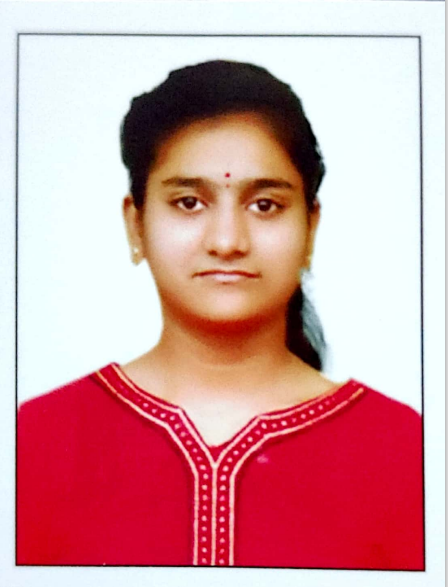

Rachamalla Hindusree

I am Rachamalla Hindusree, 2103128 from CSE branch. I am from Anantapur(District)
, Andhra Pradesh(State). I am studing B-Tech 1st year year from Institute IIT GOA. My hobbies are
reading books, listening music and playing Badminton
I completed my 10th from Sri Chaitanys English Medium School in Anantapur. Then continued my inter in
Hyderabad. I am fond of listening music. I am present persuing CSE course from IIT GOA.
Education
| Year of graduation |
Degree |
Institution |
| 2024 |
B.Tech |
Indian Institute of Technology Goa |
| 2021 |
12th standard |
Sri Chaitanya Junior College |
| 2019 |
10th standard |
Sri Chaitanya English Medium School |
1st-year Courses @ IIT Goa
Autumn 2021-2022
- MTH101 : Mathamathics by Sandipan De
- PH101 : Quantum Physics by Santosh Kumar Das
- HS101 : Foundation Programme in Humanities by Sabiha Hashami
- CH102 : Organic Chemistry by Rishikesh Narayan
- CS101 : Introduction to Computing by Dr Clint.P.George link: https://clintpgeorge.github.io/cs-101/autumn-2021/
- CH101 : Inorganic chemistry by Dr Raja Mitra
- CH104 : Chemistry lab by Rishikesh Narayan and Raja Mitra
Spring 2021-2022
- MTH1021 : Basic Algebra kalpesh Haria
- PH102 : Electricity and Magnetism by Vaibhav Wasnik
- BIO101 : Evolution by Sreenath Balakrishnan
- ME102 : Engineering graphics and Computer Aided Design by Anirudh Ambekar
- CS102 : Software Tools by Dr Clint.P.George link: https://clintpgeorge.github.io/cs-102/spring-2022/git/
Extracurricular activities
My Hobbies are playing games, Playing Badminton, and listining music. Learning about unkown things. Nature
lover.